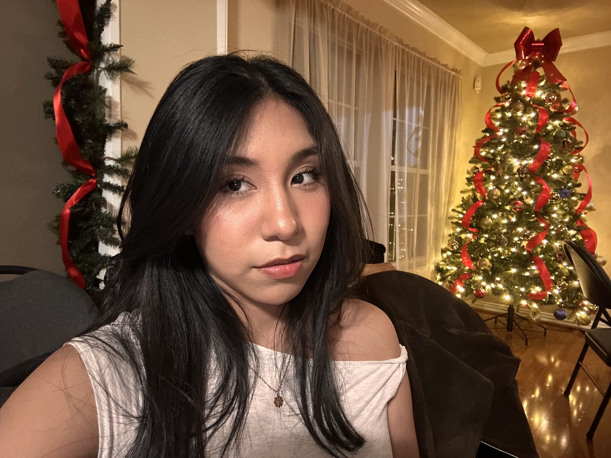

My Story
Hi, I’m Katie Hernandez. I’m beginning my journey in art and design and enjoy exploring different ways to express ideas through color, line, texture, and visual composition. My work currently includes paintings, sketches, digital illustrations, and photography.
As a beginner, I want to continue improving my skills and focus more on designing. I enjoy experimenting with different styles and techniques, and my goal is to keep learning, growing creatively, and developing stronger design skills over time.
What I Create
- Paintings and color studies
- Sketches and observational drawings
- Digital doodles and character work
- Travel photography and visual storytelling

Creative Strengths
Skills & Focus
Traditional Art
Painting
Sketching
Shading
Composition
Digital Art
Illustration
Character Design
Simple Graphics
Creative Style
Photography
Travel Photos
Composition
Architecture
Scenery